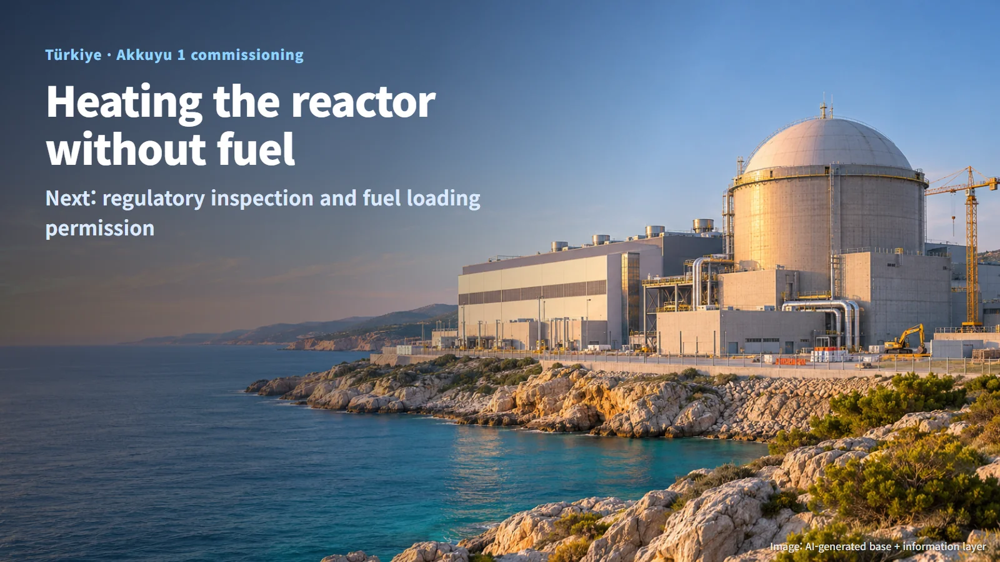
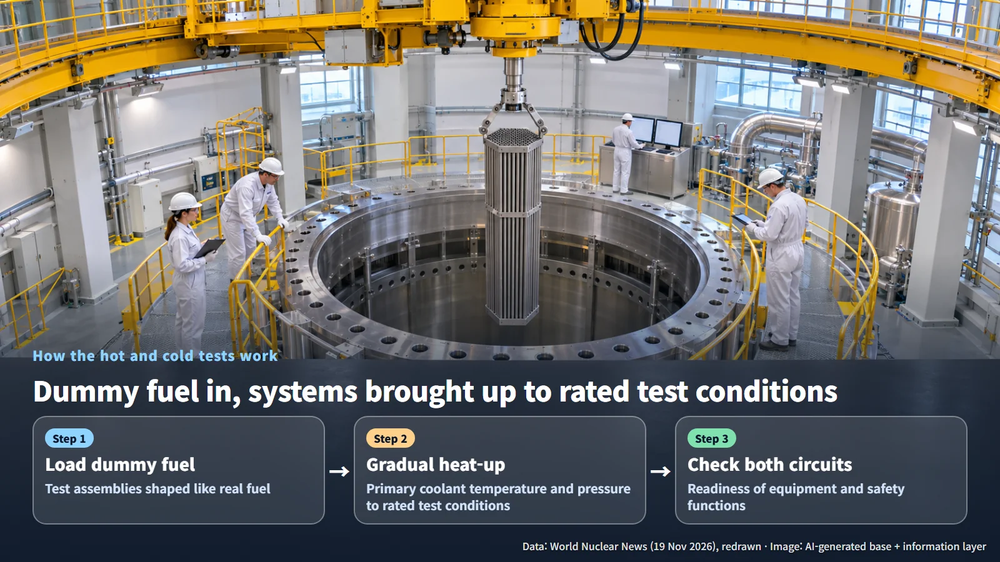
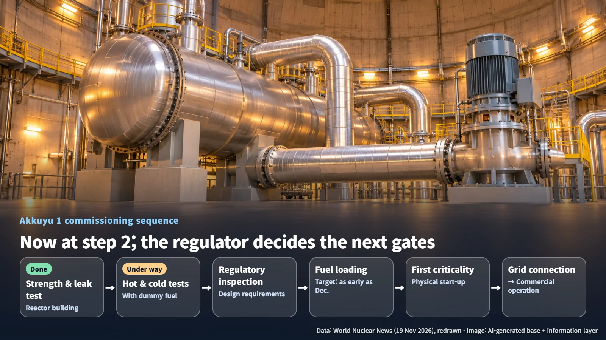

Türkiye · VVER commissioning · Safety
Akkuyu 1 Heats Up Without Fuel: What Hot and Cold Functional Tests Check Before Fuel Loading
Akkuyu Unit 1 is running hot and cold functional tests with dummy fuel assemblies, the step before the regulator decides on fuel loading and physical start-up.
Many people picture a new nuclear power plant going straight from construction to operation: finish the building, load the fuel, switch it on. In practice, a long commissioning phase sits in between. Before any fuel goes in, the reactor, its piping and its safety systems are run under conditions close to real operation to show that everything works as designed.
On 19 November 2026, World Nuclear News reported that hot and cold commissioning tests are under way at Unit 1 of the Akkuyu nuclear power plant in Mersin, Türkiye. An earlier post on 13 November covered the strength and leak-tightness test of the Akkuyu 1 reactor building (the containment); this post follows the project to its next step. Here is what the current tests check, and which gates remain before fuel loading.

Why Dummy Fuel Goes In Instead of Real Fuel
The most distinctive feature of this test campaign is that the reactor is loaded with dummy fuel assemblies in place of real nuclear fuel. A dummy assembly is a test structure shaped like a real fuel assembly, without the fissile material that sustains a chain reaction. The operator, Akkuyu Nuclear, says that with these assemblies in place it is confirming the operational readiness of equipment in the primary and secondary circuits.

The primary circuit carries the coolant that passes through the reactor core and picks up its heat. The secondary circuit takes that heat, turns water into steam and drives the turbine. With fuel-shaped structures in the core, coolant flows along a path and against a resistance similar to those of real operation. A useful comparison is a new aircraft flying test sorties with ballast in the seats before it carries passengers.
The purpose is to check equipment readiness and make any necessary adjustments before loading nuclear fuel. Radiation protection and work controls depend on the plant condition and the requirements of each task.
What Gets Checked: From Strength, Piping and Vibration to Protection Systems
According to the operator, the tests cover equipment strength, piping, vibration, safety systems, and the reactor control and protection systems. The program heats the reactor plant gradually and raises the temperature and pressure of the primary coolant step by step up to the rated test conditions.
That explains why the campaign carries both "cold" and "hot" in its name. At lower temperatures, pumps, valves and instruments are checked for correct operation. As temperature and pressure climb, engineers watch how metal components expand under heat, how pipe supports behave, and how the moving coolant makes the equipment vibrate. It works like climbing a staircase one step at a time and checking each landing before moving up.
A particularly important part of the campaign is that it simulates conditions that depart from normal operation as well as normal conditions. The reactor protection system stays on standby during ordinary operation; when temperature or pressure leaves its set range, it automatically shuts the reactor down or starts safety equipment. Real abnormal events cannot be scheduled for a test, so the campaign creates such conditions deliberately and confirms that signals travel correctly and that equipment responds in the intended sequence. The operator describes this as the procedure that confirms the reliability of equipment and safety functions before real fuel is loaded.
The Gates After Testing: Regulatory Inspection, Fuel Loading Permission, Start-up
Here is where Akkuyu 1 stands, step by step:
1. Reactor building strength and leak-tightness test (covered in the 13 November post) 2. Hot and cold commissioning tests (under way now) 3. Regulatory inspection of the test results, checking compliance with design requirements 4. Permission to load fuel, followed by fuel loading 5. Physical start-up: first criticality, when the reactor first sustains a fission chain reaction on its own 6. Grid connection: the first delivery of electricity to the power grid 7. Commercial operation
According to the operator, once testing is complete the regulator will inspect whether design requirements have been met, and will decide separately on fuel loading and on physical start-up. The unit is now at step 2; steps 3 and 4 depend on the regulator's decisions.

Measurement data and inspection records from the hot and cold tests support the regulator’s decision on fuel loading and physical start-up. Further tests and checks accompany the subsequent start-up and power-ascension stages.
Reading the "As Early As December" Fuel Loading Target
Rosatom executives said that if the tests succeed, they hope to load fuel as early as December. Two conditions are attached to that timing. The first is successful completion of the hot and cold tests; the second is the regulator's inspection of the results and its permission to load fuel. The actual schedule follows from when both conditions are met.
At the time of the report (19 November), testing was in progress, and neither the final test results nor the regulator's inspection and permission had been announced. "As early as December" is therefore best read as a target for the earliest possible date if every step goes smoothly. The milestones to watch next are the announcement that testing is complete, the regulator's inspection findings and fuel loading permission, and the start of fuel loading. First criticality and grid connection will then follow as separate news items.
After the earlier stage proved the strength of the reactor building, the work has now moved to the heart of the plant: confirming that its piping and safety systems hold up at real operating temperature and pressure. With this sequence in mind, the next headline that mentions "fuel loading", "criticality" or "grid connection" becomes easy to place on the path to operation. A future post will pick up the story when the Akkuyu 1 test results and the regulator's decisions are released.